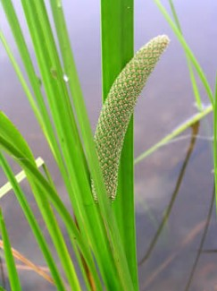
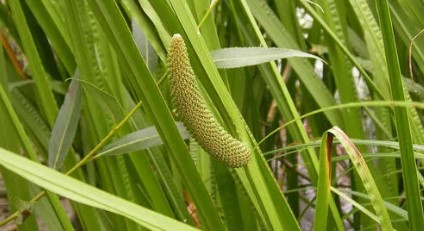
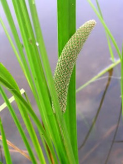
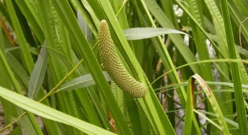

PHOTOS:
 



Botanical Name: Acorus calamus
Common name: Bach
Sweet flag (Acorus calamus) thrives in wet, marshy areas, including riverbanks, swamps, and pond edges. It prefers temperate and subtropical climates, often growing in shallow water or moist, fertile soil. It is cultivated by planting rhizomes in wet, marshy soil or shallow water. It requires full sunlight and regular watering. Rhizomes should be spaced to allow growth, and the plant benefits from occasional fertilization in nutrient-rich soil. It (Acorus calamus) is used in traditional medicine for digestive issues, such as indigestion, bloating, and nausea. It's also used to treat respiratory conditions, coughs, and bronchitis. Additionally, it has been employed as an antimicrobial and antiinflammatory remedy.